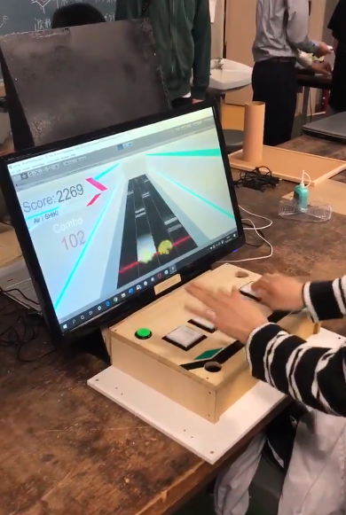
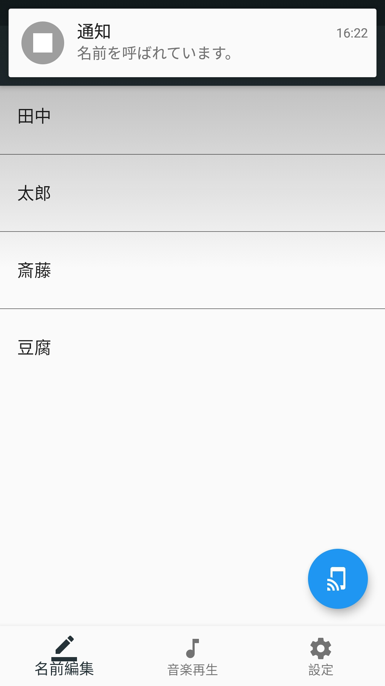

ゲームエンジン
Unity、およびArduino Leonardoを用いてゲームとコントローラを自作し、文化祭で自主活動として展示しました。
→
製作記

▲ 文化祭で展示した『Lawine』
SSH教育の授業の一環として、チームを組み自ら課題を設定し、それを技術的に解決する研究を行いました。
私たちのチームは、Google社に提供されている
Flutterというアプリフレームワークを使い、周囲の音を音声認識で拾い、アプリ利用者に危険時に通達するアプリケーションの開発を目標に取り組みました。
最終発表時には、利用者が名前が呼ばれた際に通知するところまで研究が進みました。

▲ 通知中のアプリ画面